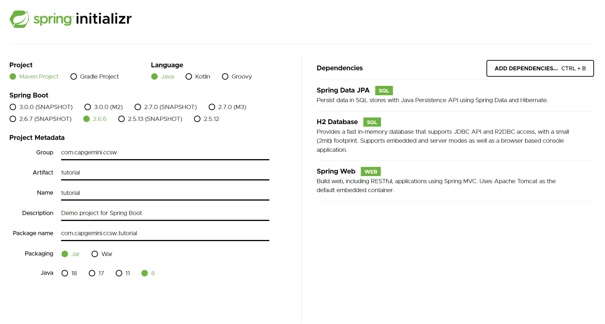

Creación de proyecto
Por lo general necesitaremos un mínimo de dos proyectos para desarrollar una aplicación:
- Por un lado tendremos un proyecto Springboot que se ejecutará en un servidor de aplicaciones, tipo Tomcat. Este proyecto tendrá la lógica de negocio de las operaciones, el acceso a los datos de la BBDD y cualquier integración con servicios de terceros. La forma de exponer estas operaciones de negocio será mediante endpoints de acceso, en concreto llamadas tipo REST.
- Por otro lado tendremos un proyecto Angular que se ejecutará en un servidor web de ficheros estáticos, tipo Apache. Este proyecto será código javascript, css y html, que se ejecutará en el navegador Web y que realizará ciertas operaciones sencillas y validaciones en local y llamadas a nuestro servidor Springboot para ejecutar las operaciones de negocio.
Puede haber otro tipo de proyectos dentro de la aplicación, sobretodo si están basados en microservicios o tienen componentes batch, pero estos tipos los veremos en el tutorial.
Consejo
Como norma cada uno de los proyectos que componen la aplicación, debería estar conectado a un repositorio de código diferente para poder evolucionar y trabajar con cada uno de ellos de forma aislada sin afectar a los demás. Así además podemos tener equipos aislados que trabajen con cada uno de los proyectos por separado.
Info
Durante todo el tutorial, voy a intentar separar la construcción del proyecto Angular de la construcción del proyecto Springboot, para terminar haciendo una integración entre los dos. De esta forma podrás comprobar como se puede desarrollar por separado cada uno de los dos proyectos sin ningún problema.
Creación de proyecto Angular
La mayoría de los proyectos con Angular en los que trabajamos normalmente, suelen ser proyectos web usando las librerías mas comunes de angular, como angular material.
Para crear un proyecto de Angular, es necesario tener instalado el CLI de Angular. Si no lo tienes instalado, por favor, acude a la sección Entorno de desarrollo y verifica que tienes instalado todo lo necesario.
Nuevo proyecto
Lo primero es crear un proyecto desde la consola mediante la herramienta Angular CLI. Para ello abrimos una consola de msdos donde tengamos instalado y enlazado Angular CLI, nos situamos en el directorio donde vamos a crear el proyecto y ejecutamos:
ng new tutorial
Nos realizará varias preguntas.
Would you like to add Angular routing? (y/N)
Preferiblemente: yWhich stylesheet format would you like to use?
Preferiblemente: SCSS
En el caso del tutorial como vamos a tener dos proyectos para nuestra aplicación (front y back), para poder seguir correctamente las explicaciones, voy a renombrar la carpeta para poder diferenciarla del otro proyecto. A partir de ahora se llamará front.
Info
Si durante el desarrollo del proyecto necesitas añadir nuevos módulos al proyecto Angular, será necesario resolver las dependencias antes de arrancar el servidor. Esto se puede realizar mediante el gestor yarn (que es más eficiente que el propio gestio de npm), directamente en consola ejecuta el comando yarn y descargará e instalará las nuevas dependencias.
Arrancar el proyecto
Para arrancar el proyecto, tan solo necesitamos ejecutar en consola el siguiente comando siempre dentro del directorio creado por Angular CLI:
ng serve
Angular compilará el código fuente, levantará un servidor local al que podremos acceder por defecto mediante la URL: http://localhost:4200/
Y ya podemos empezar a trabajar con Angular.
Comandos de Angular CLI
Si necesitas más información sobre los comandos que ofrece Angular CLI para poder crear aplicaciones, componentes, servicios, etc. los tienes disponibles en: https://angular.io/cli#command-overview
Creación de proyecto Springboot
La mayoría de los proyectos Springboot en los que trabajamos normalmente, suelen ser proyectos web sencillos con pocas dependencias de terceros o incluso proyectos basados en microservicios que ejecutan pocas acciones.
Creación con Devonfw
Podemos crear una estructura de proyecto con todas las dependencias activadas y configuradas a través de devonfw. En el tutorial vamos a utilizar un proyecto simple de Springboot, pero queremos que conozcas que con devonfw también se puede crear. Si quieres saber más, visita el punto de Anexo en esta misma sección.
Nota
Está bien tener una plantilla de generación de proyecto con Devonfw a modo de ejemplo donde podamos consultar, pero es mucho más sencillo crear una aplicación vacía e ir añadiendole las necesidades de nuestro proyecto a medida que nos vayan haciendo falta. Por eso te recomendamos que pases al punto de Spring Initializr
Creación con Spring Initilizr
Este método es mucho más recomendable si lo que quieres es tener un proyecto mínimo y sencillo, sin muchas dependencias.
Spring Initializr
Spring ha creado una página interactiva que permite crear y configurar proyectos en diferentes lenguajes, con diferentes versiones de Spring Boot y añadiendole los módulos que nosotros queramos.
Esta página está disponible desde Spring Initializr. Para seguir el ejemplo del tutorial, entraremos en la web y seleccionaremos los siguientes datos:
- Tipo de proyecto: Maven
- Lenguage: Java
- Versión Spring boot: 2.3.0 (o la que exista por defecto)
- Group: com.capgemini.coedevon
- ArtifactId: tutorial
- Versión Java: 8
- Dependencias: Spring Web, Spring Data JPA, H2 Database y Flyway

Esto nos generará un proyecto que ya vendrá configurado con Spring Web, Spring Data para acceder a BBDD, y H2 junto con Flyway para crear una BBDD en memoria de ejemplo con la que trabajaremos durante el tutorial.
Importar en eclipse
El siguiente paso, ovbiamente es descomprimir el proyecto generado e importarlo como proyecto Maven. Abrimos el eclipse, pulsamos en File → Import y seleccionamos Existing Maven Projects. Buscamos el proyecto y le damos a importar.
Configurar el proyecto
En realidad el proyecto está configurado completamente con las propiedades por defecto que vienen en Spring boot. Tan solo para poder arrancar el proyecto nos hará falta un fichero de creación de BBDD que utiliza flyway al arrancar y será necesario tenerlo disponible.
Crearemos dos ficheros, de momento en blanco, dentro de src/main/resources/db/migration:
- V0001__Create_Schema.sql → Será el fichero que utilizaremos para crear el esquema de BBDD
- V0002__Create_Data.sql → Será el fichero que utilizaremos para rellenar con datos iniciales el esquema de BBDD
Plantilla de proyecto
Puedes descargarte una plantilla ya construida, con Sprint Initializr y configurada con los pasos que hemos visto en esta sección.
Arrancar el proyecto
Por último ya solo nos queda arrancar el proyecto creado. Para ello buscaremos la clase TutorialApplication.java y con el botón derecho seleccionaremos Run As → Java Application. La aplicación al estar basada en Springboot arrancará internamente un Tomcat embebido donde se despliegará el proyecto. Si habéis seguido el tutorial la aplicación estará disponible en http://localhost:8080, aunque de momento aun no tenemos nada accesible.
Anexo. Creación con Devonfw
Podemos utilizar la plantilla de creación que nos ofrece Devonfw a través de su guía de desarrollo. Concretamente podemos seguir estos pasos: Creating a new application.
El problema que tiene esta plantilla es que genera un proyecto totalmente configurado y que tiene activadas un conjunto muy grande de librerías. La mayoría de estas librerías no las utilizaremos jamás en ningún proyecto e incluso hay configuración de seguridad que tampoco vamos a utilizar por norma general o la tendremos que modificar para adaptarla a nuestra situación (proyecto, entorno, cliente, etc.).
Ejecución de arquetipo
Aun así, si quieres crear un proyecto con devonfw es muy sencillo, puedes seguir estos pasos:
-
Nos situamos en la carpeta que queramos que contenga nuestro proyecto y ejecutamos una consola de comandos. Para ello hacemos clic derecho y seleccionamos la opción Open devonfw CMD shell here y se nos abrirá la consola.
-
En la consola de devon, tecleamos el siguiente comando:
devon java create com.capgemini.coedevon.tutorial. Veremos como el propio framework se descarga todo lo necesario y en breves momentos tendremos todo listo. Esto nos creará un proyecto de devon4j, con el nombre de paquete com.capgemini.coedevon.tutorial, el id de grupo com.capgemini.coedevon, el id de artefacto tutorial, la versión 1.0.0-SNAPSHOT y una base de datos h2 ya preconfigurada.

- Una vez haya terminado, teclearemos lo siguiente:
cd tutorialy nos posicionará sobre la carpeta raíz del proyecto. Estando en la carpeta raíz del proyecto, tecleamos lo siguiente:devon eclipsey nos arrancará Eclipse.
O tambien puedes descargarte una plantilla ya construida de devonfw.